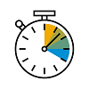
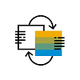

Why Use
SAP Fiori Elements?
Why Use
SAP Fiori Elements?
Here's why – in a nutshell.
|  |
Developer Productivity
- Focus on business logic and back-end
services
- Write less UI code
- Reduce development and maintenance
costs
|
|  |
UX Consistency
- Comply with the latest SAP Fiori design
specification
- Deliver a centrally managed user experience
- Include uniform layout, navigation, search,
filtering, and more
|
|
Enterprise Readiness
- Deliver high-quality
SAPUI5 applications to end users
- Ensure stable, optimized UI code out of the box
- Include standard enterprise features (accessibility, mobile, translation support, and more)
|
The initial effort for creating an app using SAP Fiori elements might be higher than
creating a freestyle SAPUI5 app. However, you will be richly rewarded
for this effort after you've created more apps this way because your apps will benefit from using the framework and the included
features.
Parent topic:
Previous:
Next: